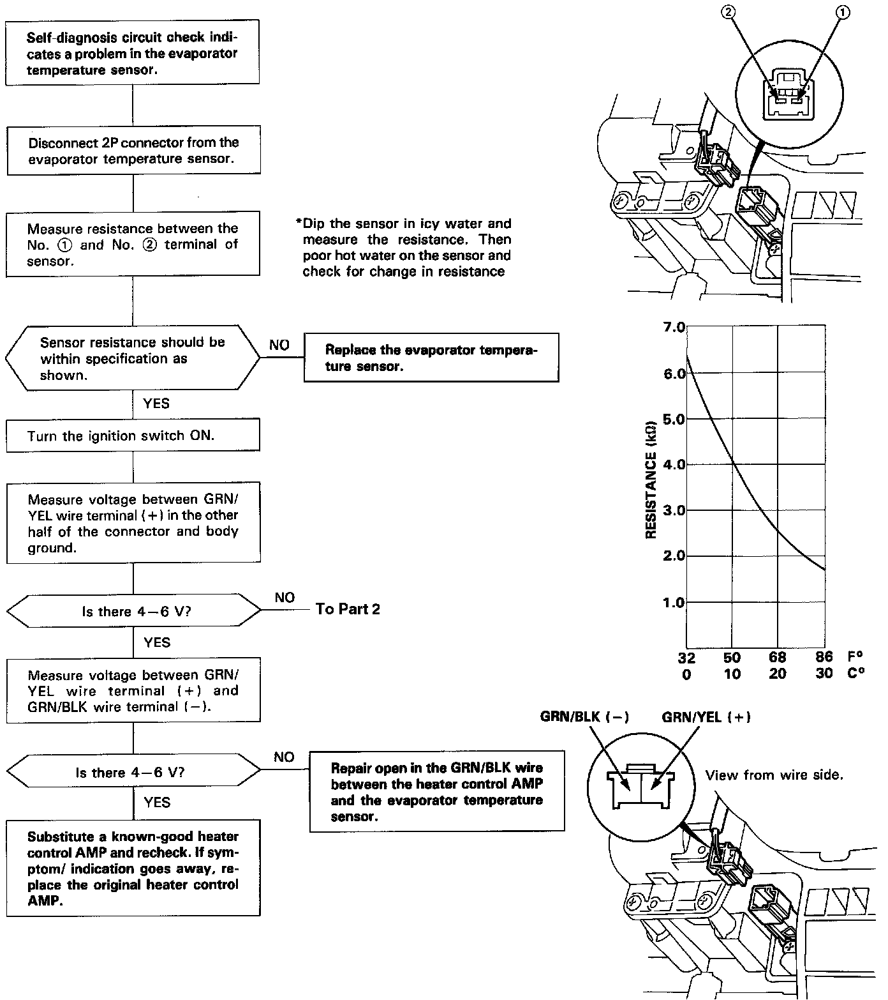
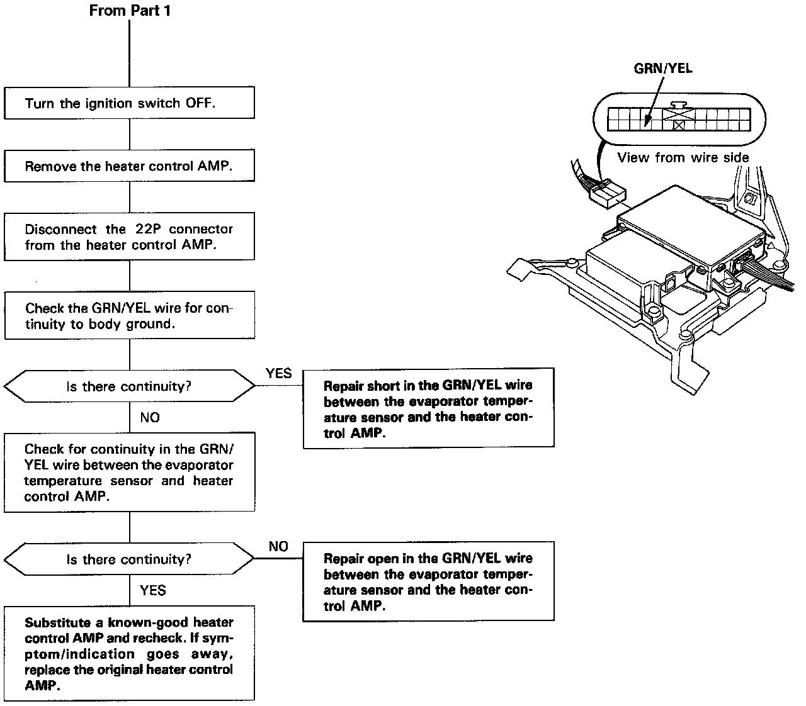

DTC 1
Evaporator Temperature SensorSelf-diagnosis A/C LED light indicates code 1: A problem in the evaporator sensor circuit. Use a digital multimeter (KSAHM-32-003) to check it.
The evaporator temperature sensor is a temperature dependent resistor (thermistor). The resistance of the thermistor decreases as the evaporator outlet air temperature increases.
Part 1:

Part 2:
